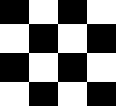

<!-- dividers start -->

<!--variant center-->
<div class="flex flex-col gap-space-between-xl">
    <!-- divider avatar center start -->
    <div class="flex gap-space-between-lg items-center">
        <hr class="flex flex-1 h-1 ${color} border-0 rounded">
        <!--@avatar variant xs-->
        <div class="relative avatar-size--md rounded-full border-primary-stroke-md overflow-hidden">
            <svg class="absolute" viewBox="0 0 64 64" fill="none" xmlns="http://www.w3.org/2000/svg" >
                <circle cx="32" cy="32" r="32" fill="url(#pattern0)"/>
                <defs>
                    <pattern id="pattern0" patternContentUnits="objectBoundingBox" width="1" height="1">
                        <use xlink:href="#image0_3099_106031" transform="scale(0.015625)"/>
                    </pattern>
                </defs>
            </svg>
            
        </div>
        <!--@avatar variant xs end-->
        <hr class="flex flex-1 h-1 ${color} border-0 rounded">
    </div>
    <!-- divider avatar center end -->
</div>
<!--variant center end-->
<!-- dividers end -->